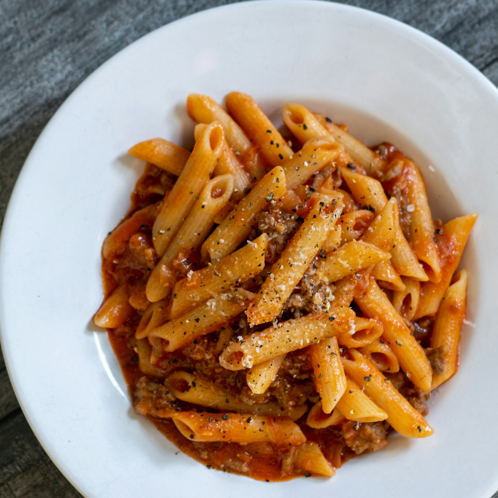

Home
Pasta

Description
Recipe for Pasta is as follows: Our best ever spaghetti bolognese is super easy and a true Italian classic with a meaty, chilli sauce.
Ingredients
- 1 tbsp olive oil
- 4 rashers smoked streaky bacon finely chopped
- 2 medium onions finely chopped
- 2 carrots trimmed and finely chopped
- 2 garlic cloves finely chopped
- small pack basil leaves picked, ¾ finely chopped and the rest left whole for garnish
Steps
- Put a large saucepan on a medium heat and add 1 tbsp olive oil.
- Add 4 finely chopped bacon rashers and fry for 10 mins until golden and crisp.
- Reduce the heat and add the 2 onions, 2 carrots, 2 celery sticks, 2 garlic cloves and the leaves from 2-3 sprigs rosemary, all finely chopped, then fry for 10 mins. Stir the veg often until it softens.
- Increase the heat to medium-high, add 500g beef mince and cook stirring for 3-4 mins until the meat is browned all over.
- Add 2 tins plum tomatoes, the finely chopped leaves from ¾ small pack basil, 1 tsp dried oregano, 2 bay leaves, 2 tbsp tomato purée, 1 beef stock, 1 deseeded and finely, . Stir with a wooden spoon, breaking up the plum tomatoes.
- When the bolognese is nearly finished, cook 400g spaghetti following the pack instructions.